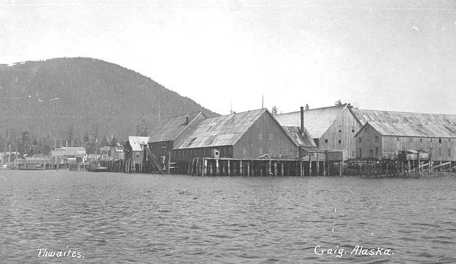
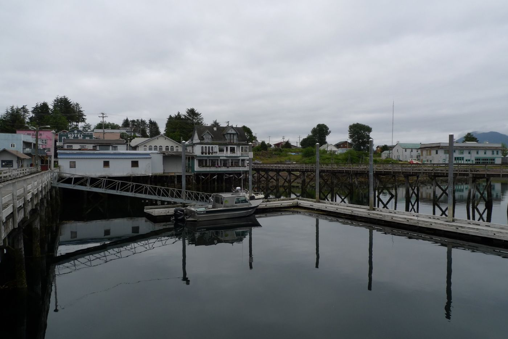

Directory / Southeast Alaska / Craig, AK
Craig tides — North Cove, South Cove & Bucareli Bay
High and low tides for the coming week from NOAA station 9450551 (Craig, Klawock Inlet — 55.4883, -133.142). Times are local (AKST/AKDT). Heights are feet above Mean Lower Low Water (MLLW). Craig sits on a small island off the west coast of Prince of Wales Island, joined to it by a short causeway, about 7 road miles south of Klawock and 31 miles west of the Hollis ferry terminal. It is the largest town on the island and home port for a big share of the Southeast troll, seine, longline and dive fleets. The open Gulf of Alaska is just past Baker, Suemez and Noyes islands, so outside-coast weather reaches the harbor quickly. The City of Craig runs North Cove and South Cove harbors (220 annual slips), the downtown City Float, and the False Island launch float.
A 15-ft tide drop, three tidal grids, a 52-ft trailer haul-out & an outside-coast gale
The tide swing. NOAA 9450551 is a harmonic (reference) station, so its predictions are computed for Craig directly, not as offsets from another port. In the NOAA predictions fetched 2026-11-21, Wednesday, November 25, 2026 has a 12.3 ft high at 12:15 PM and then a −2.7 ft low at 7:13 PM. That is a drop of about 15.0 ft in seven hours. Christmas Eve is a little bigger: 12.4 ft at 12:03 PM to −2.8 ft at 7:05 PM (about 15.2 ft). Minus tides come every evening Nov 22–29, Dec 5–12 and Dec 20–28, mostly between about 4:30 PM and 11 PM. Craig swings less than the Lynn Canal ports but more than people expect on the outside coast, so leave slack in your lines.
Grids & haul-out. The city has a tidal grid at North Cove, another at South Cove (plus grid posts), and one at the City Float. Grid use is $1.00 per foot per day (City of Craig rates effective July 1, 2026). In the next five weeks the lowest daylight grid tides are about 0.6 ft at 3:47 PM Fri Dec 4, 1.1 ft at 2:49 PM Sat Dec 19, and −0.1 ft at 3:45 PM Sun Dec 20. All of these come at or just after the early winter sunset, so bring lights. For a real haul-out, the city’s self-propelled Brownell hydraulic boat trailer handles most vessels up to 52 ft and 50 tons. It costs $16 per foot if the boat is blocked in the yard, or $13 per foot if it stays on the trailer overnight ($50 a night). The harbor needs a photo of the hull out of the water before it will schedule you. The city can also land boats in the Shaan Seet yard by arrangement.
Weather & fuel. api.weather.gov returns no marine zone for the town point itself, but every water point we tested off the harbor and out through San Alberto and Bucareli bays falls in PKZ641 Dixon Entrance to Cape Decision out to 15 NM. The Hollis side of the island and the ferry run to Ketchikan are in PKZ036 Clarence Strait. The outside-coast forecast issued 6:03 PM AKST Sat Nov 21, 2026 carries a Small Craft Advisory for Sunday. It then builds to an east gale to 40 kt with gusts to 55 kt and 12 ft seas Monday night, and 13 ft seas Tuesday and Wednesday. Check the live forecasts below before you go outside. Petro Marine’s fuel dock at 110 J.T. Brown St is open Mon–Sat 8 AM–5 PM in winter (closed Sundays until summer hours start in May). Harbor office: 907-826-3404 (Mon–Fri 7–3); harbor staff answer on VHF 16 until 8 PM.
Computed from NOAA CO-OPS hi/lo predictions for 9450551 (2026-11-22 through 2026-12-31) and its station metadata; the NWS Juneau coastal and inside-waters forecast text and api.weather.gov zone lookups at 55.4764,-133.1481 (no zone), 55.47,-133.15, 55.45,-133.20, 55.40,-133.30, 55.50,-133.20 and 55.35,-133.25 (all PKZ641) and 55.48,-132.62 (PKZ036); and the City of Craig harbors & moorage, boat haul-out, services & fee schedule, fuel dock and harbor policy pages, all checked 2026-11-21. Not for navigation.
Craig then & now
Historic

.jpeg){kind=link}
Current

.jpg){kind=link}
Official NOAA predictions Station home NOAA chart viewer View on Windy
Port Sponsor — Craig, AK
Top placement for fuel, processors, yards, charters, lodges, and marine businesses on the west coast of Prince of Wales Island.
$25–$50 / month
Tide data: NOAA CO-OPS station 9450551 (Craig, Klawock Inlet; harmonic station), predictions (hi/lo, MLLW, local standard/daylight time). Refreshed with each nightly build; the marine-weather snapshot time below shows the latest fetch. For Klawock and the Hollis ferry side, see the NOAA station pages for Craig and the NOAA Alaska tide prediction station list.
Wednesday, November 25, 2026
| Tide | Time (local) | Height (MLLW) |
|---|---|---|
| High | 12:56 AM | 9.0 ft |
| Low | 6:11 AM | 2.9 ft |
| High | 12:15 PM | 12.3 ft |
| Low | 7:13 PM | -2.7 ft |
Thursday, November 26, 2026
| Tide | Time (local) | Height (MLLW) |
|---|---|---|
| High | 1:44 AM | 8.9 ft |
| Low | 6:56 AM | 3.1 ft |
| High | 1:00 PM | 12.2 ft |
| Low | 8:00 PM | -2.5 ft |
Friday, November 27, 2026
| Tide | Time (local) | Height (MLLW) |
|---|---|---|
| High | 2:34 AM | 8.8 ft |
| Low | 7:45 AM | 3.3 ft |
| High | 1:48 PM | 11.7 ft |
| Low | 8:49 PM | -2.0 ft |
Saturday, November 28, 2026
| Tide | Time (local) | Height (MLLW) |
|---|---|---|
| High | 3:26 AM | 8.7 ft |
| Low | 8:39 AM | 3.5 ft |
| High | 2:40 PM | 11.0 ft |
| Low | 9:41 PM | -1.3 ft |
Sunday, November 29, 2026
| Tide | Time (local) | Height (MLLW) |
|---|---|---|
| High | 4:21 AM | 8.6 ft |
| Low | 9:43 AM | 3.7 ft |
| High | 3:39 PM | 10.0 ft |
| Low | 10:35 PM | -0.5 ft |
Monday, November 30, 2026
| Tide | Time (local) | Height (MLLW) |
|---|---|---|
| High | 5:20 AM | 8.7 ft |
| Low | 10:59 AM | 3.6 ft |
| High | 4:48 PM | 9.0 ft |
| Low | 11:33 PM | 0.4 ft |
Tuesday, December 1, 2026
| Tide | Time (local) | Height (MLLW) |
|---|---|---|
| High | 6:20 AM | 9.0 ft |
| Low | 12:22 PM | 3.2 ft |
| High | 6:07 PM | 8.1 ft |
Wednesday, December 2, 2026
| Tide | Time (local) | Height (MLLW) |
|---|---|---|
| Low | 12:33 AM | 1.2 ft |
| High | 7:17 AM | 9.4 ft |
| Low | 1:42 PM | 2.5 ft |
| High | 7:33 PM | 7.6 ft |
Marine weather & cameras
NWS marine forecast — Dixon Entrance to Cape Decision out to 15 NM (PKZ641)
Issued 421 PM AKST Tue Nov 24 2026. Snapshot fetched 2026-11-24 21:18 AKST from NWS text product. Official zone forecast · Raw text
...GALE WARNING THROUGH THIS EVENING...
- .TONIGHT...SE wind 40 kt becoming E 30 kt late. Seas 16 ft. Rain in the evening.
- .WED...SE wind 25 kt. Seas 13 ft.
- .WED NIGHT...SE wind 30 kt. Seas 12 ft. Rain.
- .THU...E wind 25 kt. Seas 11 ft.
- .THU NIGHT...SW wind 20 kt. Seas 11 ft. S swell.
- .FRI...W wind 20 kt. Seas 11 ft.
- .SAT...N wind 15 kt. Seas 6 ft.
- .SUN...NE wind 20 kt. Seas 8 ft.
NWS marine forecast — Clarence Strait (PKZ036)
Issued 757 PM AKST Tue Nov 24 2026. Snapshot fetched 2026-11-24 21:18 AKST from NWS text product. Official zone forecast · Raw text
...SMALL CRAFT ADVISORY THROUGH LATE WEDNESDAY...
- .REST OF TONIGHT...SE wind 25 kt. Seas 6 ft. South of Gravina Island Seas 12 ft subsiding to 8 ft late. Rain.
- .WED...SE wind 25 kt. Seas 9 ft. Rain in the morning.
- .WED NIGHT...E wind 25 kt. Gusts to 40 kt. Seas 8 ft. Rain.
- .THU...E wind 20 kt. Seas 8 ft. Rain.
- .THU NIGHT...S wind 20 kt. Seas 7 ft. Rain.
- .FRI...SE wind 20 kt. Seas 6 ft.
- .SAT...N wind 10 kt. Seas 2 ft or less.
- .SUN...NE wind 15 kt. Seas 3 ft.
Nearby NDBC observation — Craig (CRGA2, NWS Juneau, Craig waterfront)
wind 120°, 10 kt, gust 25 kt, air 49°F, 989.0 hPa
Observation time 2026-11-24 20:24 AKST (converted to AKST). Attribution: NOAA NDBC station CRGA2. Snapshot fetched 2026-11-24 21:18 AKST.
Nearby NDBC observation — Central Dixon Entrance buoy (46145, Environment and Climate Change Canada, about 70 NM SE)
wind 110°, 29 kt, gust 39 kt, seas 8.5 ft, air 50°F, 987.1 hPa, water 48°F
Observation time 2026-11-24 21:00 AKST (converted to AKST). Attribution: NOAA NDBC station 46145. Snapshot fetched 2026-11-24 21:18 AKST.
Nearby NDBC observation — Cape Decision (CDEA2, NWS, mouth of Sumner Strait)
wind 80°, 22 kt, gust 27 kt, air 47°F, 989.2 hPa
Observation time 2026-11-24 20:22 AKST (converted to AKST). Attribution: NOAA NDBC station CDEA2. Snapshot fetched 2026-11-24 21:18 AKST.
Harbor webcams
- FAA WeatherCams — Craig (CRGA2) (north, southeast, southwest and northwest views from the Craig camera site at 96 ft, next to the NWS Craig weather station; link only, not embedded)
The FAA Craig camera-site page (site 159, identifier CGA, 55.474° N 133.137° W) loaded on 2026-11-21 around 9:20 PM AKST and showed 22 Nov sunrise 7:40 AM and sunset 3:36 PM AKST. Expect dark frames on winter nights. We found no free public camera aimed at the North Cove or South Cove floats. Harbor businesses with a public cam: email us and we will link it.
Craig boater notes (official links)
- City of Craig Harbors & Moorage. North Cove (100 annual slips) and South Cove (120 annual slips) each have a transient area at the end of the dock with city transient power. Annual slips 21 ft and up are full, but the waitlist is free. Every vessel must check in at the harbor office (after hours, leave a detailed message). Boats moored under 3 hours pay nothing. There is no harbor pump-out, and plugging into a stallholder’s private pedestal brings a $100 fine.
- Harbor policies: transient moorage is first come, first served with no reservations. Call the harbormaster on VHF 16 as you enter, then register within 2 hours (or by 8 AM if you arrive after 8 PM) and pay in advance. Harbormaster Hans Hjort: 907-826-3404, harbormaster@craigak.com. Emergency: 911 or 907-826-3330.
- Harbor services & fee schedule (from July 1, 2026): transient $0.90 per foot per day, $7.22 per foot per month; 30-amp power $9/day; grid $1/ft/day; public ice $2 per 5 gallons; upstairs net loft $13.50/day; launch $7 a use or $40 a year.
- City boat haul-outs (Brownell trailer, about 52 ft / 50 tons) and Craig fuel dock (Petro Marine, 907-826-3296).
- Inter-Island Ferry Authority: year-round passenger and vehicle ferry between Hollis and Ketchikan. Klawock Airport (PAKW) is 7 miles north of Craig.
- ADF&G Prince of Wales Management Area (Craig office 907-826-2498), for sport-fishing regulations and emergency orders around Craig, Klawock and the outer islands.
- NOAA ENC chart viewer, for Craig, San Alberto Bay, Bucareli Bay, Tlevak Strait and the outer coast. We link to NOAA’s viewer and do not host charts.
Local marine & shore directory
Verified public listings only. List free · Get featured
Marine services
Moorage & marinas
Seafood processors & buyers
Fuel docks
Shipyards & haul-outs
Boat repair & mechanics
Marine suppliers & chandleries
Electronics sales & installation
Welding & fabrication
Canvas & upholstery
No verified listing yet — list your business free.
Surveyors
Towing & salvage
No verified listing yet — list your business free.
Ice & bait
Fishing charters
Ashore for boaters
Groceries & provisioning
Hardware
Liquor stores
Laundromats
No verified listing yet — list your business free.
Showers
No verified listing yet — list your business free.
Lodging
Restaurants
Medical clinics
Pharmacies
Post office & shipping
Airport & floatplane
Propane
Auto & truck rental
We checked these listings on 2026-11-21 against public sources: the City of Craig harbor department pages (harbors & moorage, haul-outs, fee schedule, fuel dock, staff and harbor policies); the City of Klawock harbor master page; the Prince of Wales Chamber of Commerce local business directory; and each business’s own site where it has one. Seafood processors: E.C. Phillips & Son (Craig plant), Hollis Bay Seafoods, Noyes Island Smokehouse, Seaborn Seafood, Silver Bay Seafoods and Snow Pass Seafoods are on the ADF&G 2026 Southeast shore-based processors by port list for Craig, and The Chop Shop and Wildfish Cannery are on it for Klawock (ADF&G notes the list records intent to operate). Several also appear in NOAA Fisheries 2025 federal processor permits and the USDC approved establishments list. Spirit Bear Seafoods and Seagrove Kelp are listed under seafood processors by the Chamber. Many Craig businesses are seasonal, so call ahead between October and April. We left out website links that did not load, showed only a placeholder, or pointed to a different business. Listings are a courtesy, not an endorsement. Basic listings are free; a Featured listing is $10/month or $100/year. For corrections or a free listing, contact J.L. Miller at pacifictides.ak@gmail.com (email only).
Local news — Craig, AK
Plain links to local outlets. Always check the source for the latest. Local news partners welcome.
Free weekly tides & marine weather
Get a short email for your port. We do not sell your email. Privacy.
Mailing list powered by Buttondown.
Boating gear on Amazon
As an Amazon Associate I earn from qualifying purchases.
Helpful search links for common gear. Prices and availability are on Amazon.
Other Alaska ports
- Elfin Cove tides
- Hoonah tides
- Pelican tides
- Haines tides
- Skagway tides
- Juneau tides
- Yakutat tides
- Sitka tides
- Petersburg tides
- Wrangell tides
- Ketchikan tides
- Cordova tides
- Prince William Sound ports overview
- Valdez tides
- Whittier tides
- Kenai tides
- Homer tides
- Kodiak tides
- Dutch Harbor tides
- Unalaska tides
Sources
- Tide predictions: NOAA CO-OPS station 9450551 Craig, Klawock Inlet via the CO-OPS data API (hi/lo, MLLW, local time)
- Marine forecasts: NWS Juneau coastal waters text products PKZ641 and PKZ036; zones confirmed with api.weather.gov point lookups on 2026-11-21
- NDBC observations: CRGA2 Craig (NWS Juneau), 46145 Central Dixon Entrance buoy (Environment and Climate Change Canada, via NDBC), CDEA2 Cape Decision (NWS Juneau); the refresh shows a station as unavailable when its latest report is more than a day old
- City of Craig: harbor department, harbors & moorage, boat haul-outs, fee schedule, fuel dock, harbor policies (checked 2026-11-21)
- FAA WeatherCams public camera page for Craig (site 159), checked 2026-11-21
- ADF&G 2026 Southeast Alaska shore-based processors by port; NOAA Fisheries 2025 federal processor permits; USDC Seafood Inspection Program approved establishments (Nov 2026)
- Directory:
data/businesses.csvrows for port_slug=craig, each with its public source URL (verified 2026-11-21) - Photos: John E. Thwaites, about 1912, University of Washington Libraries (public domain); Joseph (Cabin On The Road), 2009 (CC BY-SA 2.0) via Wikimedia Commons. Graphics: original Pacific Tides artwork (Bucareli Bay troller mast, troll-line tide marker, outer-coast headland).